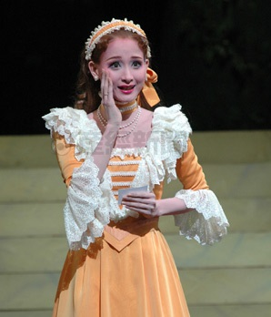

宝塚まとめ
桜一花
元花組娘役スター
愛称：いちかちゃん

当時の花組において"別格"とも呼ばれた存在。愛らしい容姿と美声を持ち、下級生の頃からその存在感を発揮していた。 特に彼女の絶世の美女からホームレスまで演じ分けるという女優っぷりは「花組の北島マヤ」と呼ぶにふさわしいものである(呼ばれてないけど)。 彼女に関しては印象に残る役が多すぎてきりがないのだが、個人的に好きなのはオーシャンズ11のクイーン・ダイアナとエリザベートのゾフィーである。 ダイアナはヒロインを憎む嫌味な悪役であるが、コミカルな演技やどこかディズニーチックな表情で、なんだか憎めない、っていうか好き！！ となってしまうようなキュートなマジシャンを演じた。残念ながら映像でしか存じ上げないのだが、もし大劇場で見ていたならオペラは彼女に 奪われっぱなしであっただろう。また、皇太后ゾフィーはエリザベートというシリアス目な演目のなかでヒロインと敵対するという、 厳格さが求められる役柄であったが、これもまた品格に溢れる演技で物語の要として素晴らしい役割を果たしていたといえる。 何が言いたいかというといちかちゃん戻ってきてってことでしょうか・・・・・・